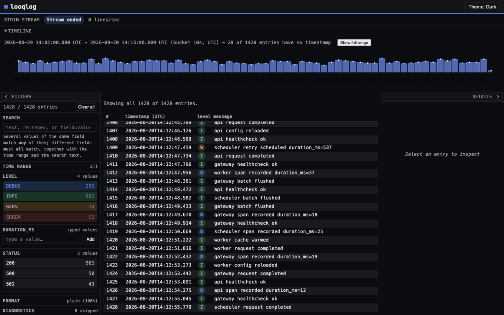
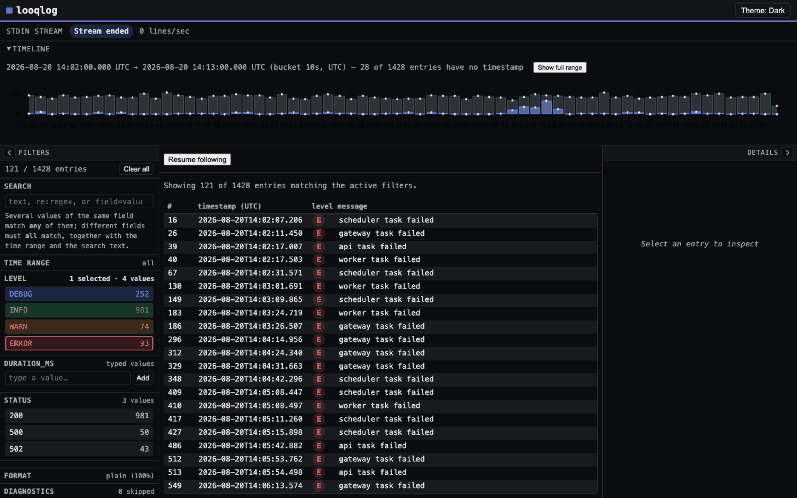
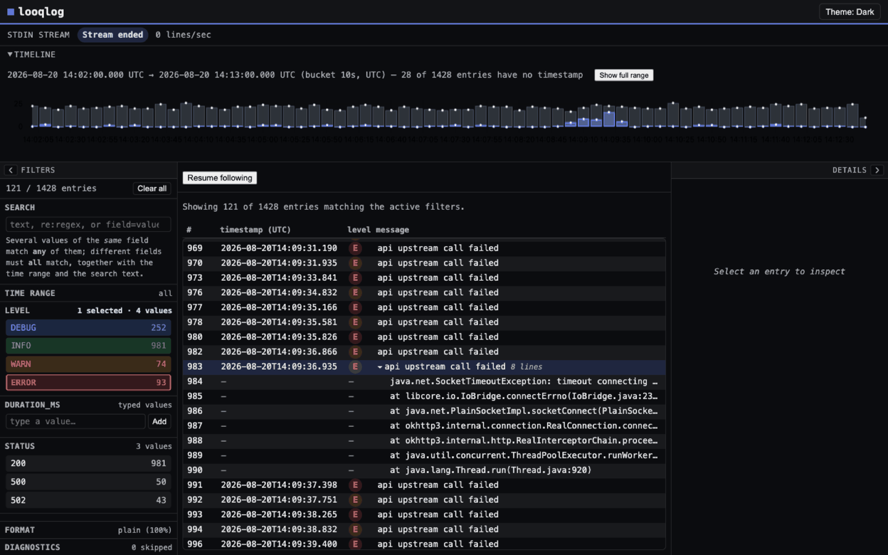

Таймлайн для лог-файла, который никуда не надо загружать.
Один бинарник. Скармливаете ему файл или перенаправляете поток — открывается вкладка с гистограммой по времени, чипами фильтров, поиском по тексту и регуляркам поверх таблицы, которая не тормозит на любом объёме. В файловом режиме лог читает браузер, до бэкенда он не доходит вообще.
Ни конфига, ни демона, ни индекса, который надо сначала построить. Формат определяется по первым строкам, а если угадал неправильно — можно задать вручную.
# файл на диске — разбирается в браузере, на бэкенд не уходит $ looqlog /var/log/app.log слушаю на http://127.0.0.1:7891 # живой поток — всё, что пишет в stdout $ kubectl logs -f deploy/api | looqlog $ docker logs -f web | looqlog $ tail -F /var/log/syslog | looqlog # задать формат самому, если детект промахнулся $ looqlog app.log и открыть #format=logfmt

Вот что открывается. Сверху таймлайн, слева чипы из тех полей, которые действительно нашлись, снизу таблица — и всё это над одним набором данных, поэтому сужение одного сужает остальные.
Каждое число ниже снято бенчмарком или секундомером с живого бинарника, и команда, которая его дала, записана в devlog проекта — вместе с теми прогонами, которые прошли плохо.
Чипы собираются из полей, которые парсер действительно нашёл, вместе со счётчиками.
Когда вы сужаете до level=ERROR, таймлайн рисует отфильтрованный ряд поверх приглушённой
копии полного. Поэтому фильтр, не поймавший почти ничего, читается как «отфильтровано до пусто»,
а не как «данных нет», — и всплеск, который вы искали, перестаёт прятаться в общем шуме.

1428 строк смешанных сервисных логов, сужено до ошибок. Всплеск в 14:09 — это инцидент.
Java-трейсы, питоновские traceback'и и развёрнутые payload'ы распознаются как продолжение записи над ними и сворачиваются в неё. Таймлайн считает события, а не физические строки, поэтому одно исключение даёт один столбик, а не стену. Поиск, попавший в кадр где-то в середине трейса, показывает исключение, которому этот кадр принадлежит, а не голую строку без контекста.

В строке 983 — восемь строк. Распознавание идёт по явным маркерам кадров, никогда по одному отступу: на Android-bugreport в 168 260 строк это правило не сработало ни разу на 134 960 строках беспрефиксного текста дампа.
JSON Lines, logfmt и обычный текст — определяются автоматически. Внутри текстового пути он ещё узнаёт распространённые формы ведущего timestamp и читает то, что идёт следом: syslog, klog, Apache/CLF, обёрнутый Docker'ом stdout и Android logcat — вместе с колонками uid/pid/tid и тегом, которые становятся полями для фильтрации, а не мусором в тексте сообщения.
Строка, которую разобрать не удалось, пропускается и сообщается — с номером и причиной. Количество записей плюс пропущенные строки плюс пустые всегда сходится с общим числом строк: просмотрщик логов, который молча теряет строки, хуже, чем никакого.
cargo install looqlog или взять бинарник
в Releases (Linux x86_64 статический,
macOS arm64 и x86_64). Больше ставить нечего — интерфейс вкомпилирован внутрь.looqlog app.log для файла или направить
в него поток. Адрес печатается в терминале; --open сам запустит браузер.Два режима дают разные гарантии, и свести их в один слоган значило бы соврать в одну из сторон.
Файл читается через File API и разбирается WebAssembly прямо во вкладке. Бэкенд его не открывает, и ни один запрос не несёт его содержимого. Можно отключить сеть после загрузки страницы — всё продолжит работать.
Строки идут от процесса CLI к браузеру по localhost-WebSocket в открытом виде, под проверкой origin и токеном, своим на каждый запуск. Это закрывает чужую вкладку в вашем браузере, но не закрывает другой процесс на той же машине.
Наружу не ходит ничего ни в одном из режимов: нет облачного сервиса, нет телеметрии, нет CDN в рантайме и нет аккаунта.
Берите lnav, если живёте в терминале. Он отличный, за ним
десять лет шлифовки, и он не выдёргивает вас из шелла. looqlog появился потому, что гистограмму по
времени, выделение диапазона мышью и панель фильтров браузер делает лучше, чем TUI, — и потому что
отдать коллеге ссылку проще, чем объяснить сочетание клавиш.
Берите Kibana или Grafana, если они у вас уже подняты. Они выигрывают в ту секунду, когда логов больше, чем с одной машины. looqlog — про файл, который уже лежит на диске, и поток, который уже идёт в терминале: ни приёмки, ни индекса, ни инфраструктуры, которую надо развернуть, прежде чем что-то увидеть.
А вот онлайн-просмотрщик брать не надо. Вставить продовые логи в веб-форму — значит отправить их на чужой сервер. Ровно этого looqlog и позволяет не делать.